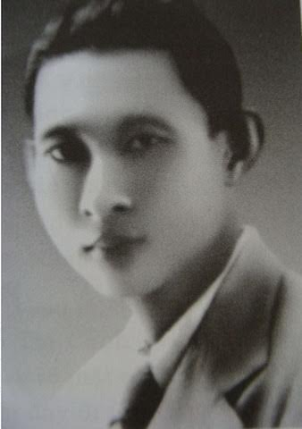
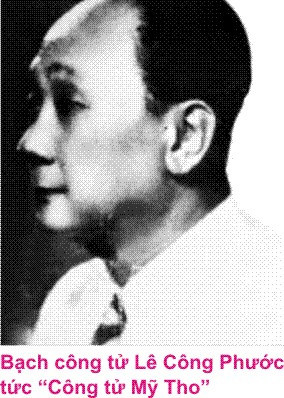

Một hôm cậu Tư Phước George lột chiếc cà rá hột xoàn trị giá trên 3000 thời đó, để trên bàn, bước vô phòng tắm. Bận ra thấy cô Ba Trà đã đeo chiếc cà rá vào ngón tay, vừa cười vừa nói:
– Anh Tư, coi vừa ngón tay em quá nè!
– Vừa thì đeo luôn đi, anh cho em đó.
(Năm đó giá vàng có 40 đồng một lượng, chiếc cà rá hột xoàn ấy trị giá 70 lượng vàng)
“…Ít bữa sau, cậu Ba Qui, Hắc Công Tử hay được, dẫn cô Ba tới tiệm bán hột xoàn danh tiếng Giuntoli trên lầu thương xá Charner (nay là thương xá Nguyễn Huệ) mua tặng cô Ba Trà một chiếc khác, hột to gấp hai chiếc kim cương mà cậu Tư đã tặng”.


Theo cổ sử Trung Hoa, công tử là con các quan đại thần, cũng có khi là con các vua chư hầu, là những người giàu có nhưng rộng rãi, có lòng nhân, biết chiêu hiền đãi sĩ, chơi với bạn bè có tín nghĩa thủy chung. Lịch sử Trung Hoa có ba người được gọi là công tử rất nổi danh:
– Bình Nguyên Quân, tên thật là Triệu Thắng, con vua chư hầu Triệu Võ, được phong đất Bình Nguyên, nên được gọi là Bình Nguyên Quân. Bình Nguyên Quân thường giao du thân mật với Mạnh Thường Quân ở nước Tề, Tín Lăng Quân ở nước Ngụy. Cả ba sống vào thời Đông Châu liệt quốc.
Bình Nguyên Quân là người rất hào hiệp, trong nhà lúc nào cũng có trên 3000 tân khách bất kể sang hè, hiền ngu, đủ mọi thành phần trong xã hội, và cũng không tỏ ra khinh hay trọng ai hơn ai.
Ở nước ta có câu hát ru em:
“Một vũng nước trong
Năm bảy dòng nước đục,
Chín mười người tục, không một người thanh,
Biết ai tâm sự như mình,
Thêu tỏ chọn lấy tượng Bình Nguyên Quân!”
– Mạnh Thường Quân tên là Điền Văn, con một đại thần nước Tề tên là Điền Anh. Cũng như Bình Nguyên Quân, Mạnh Thường Quân là người hào phóng, trọng nghĩa khinh tài, nhà giàu có bạc muôn bạc ức, bỏ ra xây nhà quán để nuôi khách. Ai muốn đến đó là gia khách cũng được đối đãi trọng hậu bất kể sang hèn. Tiếng lành đồn xa. Bất luận người nào cũng tự nhận mình là bạn của Mạnh Thường Quân
– Tín Lăng Quân, tên là Vô Kỵ, con vua Chiêu Vương, được phong tước Tín Lăng, nên gọi là Tín Lăng Quân, tánh tình rộng rãi, trong nhà lúc nào cũng có hàng ngàn thực khách ăn không ngồi rồi, nhưng ông đối xử như kẻ thân tình.
Cả ba người trên đều là những kẻ không tham sống sợ chết, tánh cương trực, hay làm việc nghĩa, dân chúng xa gần trong nước đều ngưỡng mộ. Có lẽ mấy tiếng ‘công tử’ của Nam Kỳ hồi những thập niên đầu thế kỷ 20, đều xuất phát từ các tiếng ‘công tử’ để goị những vị nêu trên chăng? Bạc Liêu là một tỉnh nhiều người giàu có lớn,con cái họ ở không ăn chơi mãi mà không hết tiền. Đôi khi họ cũng làm việc nghĩa hiệp, cư xử với bè bạn hào phóng, điệu nghệ, nên thường được các ông già bà cả goị là ‘công tử Bạc Liêu’.
– Bộ mày là công tử Bạc Liêu sao mà dám ăn xài lớn quá vậy?
Đó là câu nói thường ngày của các bậc làm ông bà cha mẹ hồi trước trong khi phê phán con cháu ăn xài xa xí. Vào năm 1934, một bài ca cổ điển ‘Bình bán’ mô tả công tử Bạc Liêu với những thói quen, và cũng là đối tượng mơ ước của các cô gái đương thời:
“… Nằm giường Lèo, tay đeo hột xoàn
Mang đôi giày Ăn-phôn (en France)
Xách cây dù Mạc-xây (Marseille)
Cái răng của cậu bịt vàng
Bóp phơi toàn bạc giấy xăng” (cent: 100).
Thời đó người ta thường hay chúc nhau: “Chúc cho chú năm tới bịt một lượt năm, bảy cái răng vàng!”. Thời nầy ở Nam Kỳ, các điền chủ hạng trung có từ 500 mẫu ruộng trở xuống đủ sức cho con cái qua Pháp du học. Những ai ham học, siêng năng, đỗ đạt về làm Cò-mi (commis, tri huyện, Đốc-Phủ sứ, bác sĩ, kỹ sư…Còn một số ít không đổ đạt, trở về làm ‘công tử Bạc Liêu’, đua nhau xài phá tiền của cha mẹ để lại.
Được mệnh danh là công tử phải biết ăn to xài lớn. Họ bày ra nhiều thứ tiêu khiển giải trí như hút á phiện cầu vui (ban đầu, về sau trở thành ghiền và chết trong nghèo đói cũng vì bịnh ghiền nầy), lập gánh hát để cầu danh, cặp kè với các cô đào chánh (cậu Tư Phước George cặp với cô Năm Phỉ, cô Phùng Há, cô Sáu Ngọc Sương…), cũng có công tử chuyện lập và đỡ đầu các hội đá banh, cờ bạc, đá gà để giải trí.
Cha mẹ các công tử ấy thường cất nhà nền đúc cao tới ngực, có khi nhà lầu hai ba từng như nhà ông Đốc-Phủ Kiểng ở Bến Tre (tên thật là Nguyễn Duy Hinh), nhà Hội đồng Trạch ở Bạc Liêu, uống rượu Martel, Champagne, Cognac, hút thuốc xì gà …để dân chúng biết họ là người phong lưu. Hồi đó, trên các sông rạch miền Nam, hằng ngày các hãng tàu đò từ Mỹ Tho về lục tỉnh nườm nượp. Nhiều ghe “trà vải” bán hàng lưu động trên sông, bán đủ thứ hàng ngoại quốc như chén dĩa kiểu, sản xuất bên Pháp, Nhựt, Trung Hoa… Sài Gòn có bán những món hàng xa xỉ như đồng hồ, máy hát, các nhà giàu tha hồ mua sắm. Sau mùa lúa ruộng, các ông hội đồng, các thầy cai, các đại điền chủ thường lên Sài Gòn ăn chơi cả tháng, tìm em út, hoặc tới các động hút thuốc phiện…
Những nhà giàu như những hạng kể trên khắp Nam Kỳ vùng nào cũng có, nhưng nhiều nhứt là ở miền Tây. Từ Tiền Giang trở lên, người ta chỉ nghe danh một công tử duy nhứt, đó là cậu Tư Phước George, tên thật là Lê Công Phước, con ông Đốc Phủ Sứ Lê Công Sủng, còn di tích một căn nhà ngói lớn hai từng ở chợ Mỹ Tho, dưới thời Tổng Thống Ngô Đình Diệm cho chính phủ mướn để làm phòng Thông Tin. Kế bên là dãy phố lầu năm căn, cũng của gia đình cậu Tư. Hồi đó, miền Nam đất rộng người thưa, ai có sáng kiến thì làm giàu nhanh chóng. Có tiền rồi, họ mua chức huyện hàm, phủ hàm để có danh với đời. Do nghị định của Thống Đốc Nam Kỳ, Pháp bán các chức “hàm” ấy cho những người giàu, lấy tiền xung vào công quỹ. Nó là chức hữu danh vô thực. Các ông huyện hàm, phủ hàm không có văn phòng, không làm việc nước gì cả. Hàng ngày cầm ba-ton đi dạo trong xóm tìm gà đá, tìm gái đẹp. Tới đâu, dân chúng cũng khúm núm “Bẩm ông huyện, bẩm ông phủ”. Ở miền Nam không có đơn vị hành chánh “phủ”, nằm trung gian giữa huyện và tỉnh như ở miền Trung và miền Bắc. Miền Nam có các quận, và người đứng đầu mỗi quận gọi là “Quan chủ quận”. Việc bán các chức huyện hàm, phủ hàm được thực thiện nhiều nhứt dưới thời Chủ tịch Hội đồng Quản hạt Paul Blanchy. Ở miền Nam, có một ông điền chủ nhà giàu, đã già, răng rụng, mua chức huyện hàm, nhưng có tật hảo ngọt, dê gái, dân chúng chế nhạo gọi ông là “Ông huyện hàm hàm” (nghĩa là răng rụng hết, chỉ còn trơ lại cái hàm).
Cậu Tư Phước George gặp cô Ba Trà lần đầu khi đến nhà Dì Tư Ăng-Lê cờ bạc. Chỗ nầy cũng có các cô gái hạng sang hay lui tới, nên các công tử, con nhà giàu tới lui dập dìu. Các công tử ấy đánh bài cầu vui, ăn thua không cần biết, chỉ cần đi lùng săn gái đẹp. Gặp cô Ba Trà lần đầu, xinh đẹp như tiên, không những cậu Tư Phước George mê liền mà cậu Ba Qui, nổi danh Hắc Công tử, cũng đang thèm thuồng. Họ không có cử chỉ ghen tương trước mặt, nhưng có những cách tung tiền trước mặt người khác, để chứng tỏ mình là người hào hoa. Trong bài “Các cuộc đời ngoại hàng Nam Kỳ thưở trước” đã in trong sách “Nam Kỳ Lục Tỉnh” tập I, chúng tôi có kể lại giai thoại hai cậu công tử vì tranh nhau tiếng ăn to xài lớn, và muốn lấy le với gái đẹp, nên một cậu (Ba Qui) đã đốt tờ giấy Ngẩu (5 đồng) cho cậu Tự lượm tiền lẻ, nay miễn nói thêm. Trong bài ấy, chúng tôi cũng nhắc qua những nét đại cương về cuộc đời ăn chơi của cậu Tư Phước George. Trong bài nầy chúng tôi sẽ nói tỉ mỉ, nhiều giai thoại hơn do chính người nhà của cậu Tư Phước George thuật lại. Cũng trong bài trước, theo lời cụ Nguyễn Văn Vực, công tử Phước George là con ông Đốc-Phủ Mẫu, đương thời làm chủ trọn Cù lao Rồng, trước chờ Mỹ Tho, nay gia đình cho biết, thân phụ cậu Tư tên là Lê Công Sủng.
Bà vợ chánh của ông Đốc-Phủ Sủng là người thuộc dòng dõi cụ Trương Vĩnh Ký, tức thân mẫu cậu Tư. Ông Đốc-Phủ Sủng có một người vợ thứ, chính là chị ruột của ba ông Thái Minh Phát, Thái Minh Đạt và Thái Minh Kim. Khi gởi cậu Tư qua Pháp du học, bà vợ thứ có gởi kèm cậu em của mình là ông Thái Minh Phát. Lúc ở bên Tây, ông Phát siêng năng học hành, đậu Tú Tài đôi, về nhà làm Cò-mi, rồi thăng làm Huyện, và sau cùng làm Đốc-Phủ Sứ tại dinh Thống Đốc Nam Kỳ. Ông Thái Minh Phát con nhà nghèo, nhờ bà chị có nhan sắc, nên được anh rể chìu chuộng, giúp đỡ các em. Về sau, ông Phát cưới một người vợ quê ở Gò Công, con ông huyện Đẩu, có nhà lớn tại chợ Mỹ Tho.
Trong khi đó, cậu Tư Phước George ham chơi, tối ngày chỉ la cà các nhà hàng, tiệm khiêu vũ, nên không có bằng cấp gì ngoài bằng cấp…nhảy đầm! Kể về vai vế, cậu Tư Phước George kêu ông Phát bằng cậu, nhưng vì cả hai đồng trang lứa, và ông Phát em của người kế mẫu nên coi như bạn bè. Lúc học bên Tây, cậu Tư cũng tỏ ra hào hiệp với bạn bè. Ai túng thiếu cứ đến cậu sẵn sàng giúp đỡ.
Vì lẽ đó, chơi với bạn bè, ai cũng kính nể cậu. Sau 1945, ông Thái Minh Phát từ quan, qua Pháp sinh sống mới mất gần đây. Người cung cấp tài liệu cho chúng tôi là bà Thái K.C., con ông Thái Minh Đạt trước làm quản lý nhà thuốc tây, gọi ông Thái Minh Phát bằng bác và bà thứ thất của ông Đốc-Phủ Sủng bằng cô ruột. Cậu Tư Phước George theo như ông bà Thái K.C., sinh năm 1901 và mất trong thập niên 1950, nhưng không nhớ rõ năm nào. Về tướng tá, cậu Tư Phước George cao lớn, trắng trẻo, đẹp trai, cho nên người đời gán cho cậu mỹ danh “Bạch Công Tử” để phân biệt với cậu công tử Ba Qui, con ông hội đồng Trần Trinh Bạch là Hắc Công Tử vì có nước da hơi ngăm đen. Nghe người nhà kể lại rằng khi về nước, cậu Tư không đỗ đạt bằng cấp gì hết, nên thân phụ là ông Đốc-Phủ Sủng tức giận. Khi xây nhà, ông đốc phủ bắt cậu gánh hồ cho thợ làm nhà. Cậu Tư giận lắm nhưng không dám cãi cha.
Sau khi thân phụ mất, để lại gia sản kếch sù, cậu Tư mặc tình ăn chơi, xài phá, vì cậu không làm ra tiền, và cũng không biết giá trị đồng tiền. Hễ cha mẹ làm tiền dễ, con cái xài phá. Đó cũng như là định luật. Có người túng thiếu đến xin cậu món gì, cậu cũng cho, không bao giờ từ chối. Ra đường tôi tớ, kẻ hầu người hạ, võ sĩ rần rần. Thậm chí một lần có gánh hát Phước Cương qua Pháp năm 1931, cậu tình nguyện qua đó hướng dẫn. Cậu đem theo một người đầu bếp để nấu cho cậu bữa ăn trưa mà thôi. Do tiếp xúc với nhiều hạng trí thức, quý tộc bên Âu Châu, nên cậu Tư ăn chơi có tác phong của một nhà quý tộc đúng nghĩa.
Theo lời người thân của gia đình tiết lộ, trong thời gian gần hai năm du lịch và ăn chơi bên Pháp (1931-32), cậu Tư có một người tình quý tộc, đó là Princesse Olga, người thuộc dòng dõi Nga Hoàng Nicolai II. Lúc ấy dân ăn chơi quý tộc, gọi cậu là “Ông Hoàng xứ Galles” (Prince de Galles), là tước hiệu của Thái tử Charles sau nầy. Trong lần gánh Phước Cương qua Pháp biểu diễn ra mắt khán giả Pháp và Việt kiều với các vở:“Phụng Nghi Đình”, “Xử Án Bàng Qúy Phi”, và “Tứ Đổ Tường”. Sau đó gánh hát Phước Cương còn đến diễn tại hội chợ Vincennes, Bảy Nhiêu, danh tài số 1 đóng cặp với đào Năm Phỉ đang hồi sáng chói. Mỗi vở hát chỉ diễn một màn tiêu biểu… được khán giả Pháp Việt rất hoan nghinh.
Ở Paris, mỗi ngày cậu Tư đều mặc một bộ đồ khác nhau. Có khi cậu mặc habit hay smoking. Lúc nào Phước George cũng đội nón Flècher, ngậm xì-gà, tay cầm ba-ton bằng gỗ mun bịt vàng. Mùa lạnh cậu có thêm áo khoác ngoài. Hằng ngày, cậu và nhóm bạn chỉ ăn uống tại các nhà hàng danh tiếng vào buổi tối, còn buổi trưa ăn tại khách sạn do người bếp cậu đưa từ Việt Nam sang nấu. Cậu cũng có mặt thường xuyên tại nhà hàng Table des Madarins. Những đêm đi dạ hội, cậu hay khoác tay người tình là công chúa Olga đến các hộp đêm Palerlo ở khu Montmartre hay khu Saint Germain des Prés, khu Champs Élysée….
Bạn người Việt ở Paris của cậu Tư Phước George là Trương Vĩnh Đằng, con của Trương Vĩnh Tống, cháu nội cụ Trương Vĩnh Ký, sau là Chánh Án ở Hải Phòng; Trần Lâm Đặng, sinh viên; Chu Mậu, người thuộc nhóm Hoàng Tích Chu, một thanh niên hào hoa, tài hoa, ăn chơi đúng mức nhờ nghề cắt may các bộ đồ đúng mốt thời đó (habit, smoking).. Chu Mậu học nghề may cắt với giáo sư James York, và đứng làm thợ phụ cắt may cho một hiệu may danh tiếng ở Versailles. Mỗi ngày cậu Tư Phước George là một nhà quý tộc khác nhau. Khi là bá tước, khi công tước, khi hầu tước.. và những đêm dạ hội, cậu Tư thật sự là một ông hoàng, cùng công chúa Olga, cây đinh của những buổi tiệc tùng sang trọng. Một buổi chiều, cậu Tư Phước George khoác tay Olga đi ngang nhà hàng Coq d’Or, một số thanh niên Pháp trẻ tuổi xôn xao:
– Chào ông hoàng!
Trong 18 tháng ăn chơi ở Âu Châu, “ông hoàng xứ Galles”, cậu Tư Phước George có một lịch trình hưởng các lạc thú khắp nơi trên đất Pháp.
Các tháng mùa Hè, cậu Tư cùng các bạn lái xe xuống phía Nam, nghỉ hè tại các thành phố biển danh tiếng như Canne, Nice… nằm ven bờ Địa Trung Hải. Có khi cao hứng, cậu Tư cùng Olga vượt rặng Pyrénées qua Tây Ban Nha xem đấu bò, hoặc khiêu vũ. Ban ngày cậu Tư tắm biển, ngồi du thuyền câu cá. Về đêm, cậu và nhóm bạn bè có mặt tại các hộp đêm sang trọng. Mùa Đông, sau khi hưởng trọn vẹn lễ Giáng Sinh tại Paris, cậu Tư thường đưa Olga đi trượt tuyết ở núi Alpes, và đến các khu du lịch, thể thao mùa đông. Còn lịch trình ăn chơi hằng ngày trong gia đình kể lại tỉ mỉ, nhưng cũng tham khảo thêm tài liệu trong quyển “Mấy chàng trai thế hệ…trước “ của cụ Dương Thiệu Thanh, một người trong nhóm bạn cậu Tư, được biết:
– Cậu Tư Phước George ăn trưa tại phòng riêng trong khách sạn, những thức ăn đó chính người đầu bếp của cậu đưa từ Sài Gòn qua nấu.
– Khoảng 4 giờ chiều, cả nhóm cậu Tư đến họp bạn tại một quán cà-phê ở khu Montmartre. Tại đây, chủ nhà hàng đã kê sẵn hai bàn dài, trải thảm đỏ đón cậu Tư.
– Từ 5 giờ chiều, cả nhóm kéo nhau đi trà vũ cho tới 7, 8 giờ tối.
– Đến một nhà hàng quen thuộc dùng cơm tối, thường là Tables des Mandarins, rồi đi khiêu vũ cho đến 1 gìờ khuya.
– Ăn khuya xong, về khách sạn thay đồ (smoking hoặc habit) rồi la cà đến các hộp đêm cho tới sáng.
– Khoảng 6 giờ sáng, ăn điểm tâm nhẹ, thường là món Soupe d’oignons.
– Ăn xong, cả nhóm xuống chơi rừng Boulogne chèo thuyền, giải lao để dưỡng sức, rồi về hôtel ngủ đến 2, 3 giờ trưa thức dậy. Sau đó cậu Tư ra vườn hoa đi bách bộ, thở không khí trong lành và làm vài động tác thể dục…
Nói đến các công tử ăn chơi bên Tây, tôi nhớ lại chuyện kể của một công tử khác, gia đình điền chủ hạng trung, thấy người ta du học bên Tây cũng ham, nên mặc dầu mới vừa xong bậc Tiểu Học, cũng đòi cha mẹ cho qua Pháp du học. Đó là công tử Út Nhu, thân phụ của hai người bạn tôi, cả Trà Vinh, Vũng Liêm, nghe nói tới cậu Út Nhu ai cũng biết. Cũng nên nói thêm là Trà Vinh cũng có nhiều công tử nổi tiếng khắp miền Nam như công tử Bích (không phải công tử Bích, chủ nhà băng ở Cần Thơ), anh ruột cô Sáu Hương. Sáu Hương là một cô gái mới, có học vừa đẹp vừa sang, con nhà giàu. Cô thích cặp bồ với tình nhơn bảnh trai, không cần moi tiền đàn ông như những cô gái ăn chơi thời đại đó. Không giới hạn ăn chơi như các công tử Dù Hột, công tử Hai Đinh (anh ruột Hắc Công Tử Ba Qui), công tử Tám Bò…, công tử Bích từng tung tiền khắp các đô thị Nam Kỳ, cũng như ở Sài Gòn. Trong số các vị ấy, công tử Út Nhu mà tôi được hân hạnh nghe ông kể lại cuộc đời du học sinh bên Tây nhiều lần rất hấp dẫn của ông.
Thời gian đó, ông đã già, gia đình còn nhiều ruộng đất, do các con tự canh tác nên đời sống vẫn phong lưu. Quê ông ở tại Bằng Đa, quận Châu Thành, Trà vinh, có nhiều ruộng đất ở Cầu Ngang, Mỹ Cẩm, An Trường, nhưng từ sau 1949, ông về ở hẳn tại Vũng Liêm. Ngôi nhà lớn đổ nát vì Cộng Sản ra lịnh phá hoại để “tiêu thổ kháng chiến”, nhưng sau năm 1955, ông đã cất lại một ngôi nhà gạch tại nền nhà cũ, cách ngã ba Quán An Nhơn chừng 2km. “Cậu Út”, tôi thường quen gọi như vậy, vì cậu nhỏ hơn má tôi vài tuổi.
“Lúc đó, tao bằng tuổi mầy” cậu mở đầu, sẵn tiền của cha mẹ gởi qua, chỉ lo ăn chơi mà không chịu học. Tao qua Pháp theo một người quen, do gia đình tao gởi gấm. Lúc đó mới 16 tuổi (1932).
Trong buổi xế chiều của cuộc đời, có lẽ do mặc cảm kém danh phận, nên cậu ít khoe khoang, tự hào về cái dĩ vãng của mình. Là bạn của các con cậu, chúng tôi thường tới lui nhà cậu, được cậu coi như con cháu. Thỉnh thoảng, cậu ngồi vào bàn uống trà, hồi tưởng chuyện xưa:
Lúc mới qua Tây, vô lớp học, tao ngồi bàn chót. Trong khi thầy giáo giảng bài ở trên, dưới nầy tao lấy bánh mì ra gặm vì tao đâu có hiểu hết những gì ông ta giảng. Tại tao ham đi Tây, mà ba má tao cũng muốn cho con du học bên Tây để nở mày nở mặt với người ta, nên tao chưa học tới đâu mà cũng…du học. Tao vừa học xong Cours Supérieur (tức xong bực Tiểu Học). Xa nhà, sẵn tiền, lại gần chỗ ăn chơi, không ai kềm chế nên tao cũng bắt chước các bạn qua trước, tập tễnh ăn chơi theo họ. Nhớ laị lần đầu đi xe lửa từ Marseille lên Paris chừng 900km. Xe chạy suốt đêm, lẽ ra tao ngủ lấy sức, nhưng vì mới qua, cái nào cũng lạ, nên tao tỉnh như sáo sậu. Tao là dân da vàng từ Á Châu tới, phần đông người Pháp chỉ hiểu là các dân da vàng ở phía Đông Địa Trung Hải, nhưng không rõ là người Tàu, người Nhựt. Họ biết rất ít về người Đông Dương và nhứt là người Annam (tên cũ của Việt Nam). Bỡ ngỡ với xứ lạ, tao có cử chỉ rụt rè nhà quê, khiến bọn Tây đầm chú ý. Tình cờ, tao ngồi gần một gia đình người Pháp gồm hai vợ chồng và một đứa con gái trạc tuổi tao.
Đứa con gái nhìn tao hỏi chuyện:
– Anh là người xứ nào tới?
Tao lúng túng trả lời:
– Tôi ở Bằng Đa, tỉnh Trà Vinh. Đáng là tao nói: “Tôi là người Annam hay người Đông Dương” thì họ biết ngay nhưng vì mất bình tĩnh, tao trả lòi theo thói quen như ở bên nhà. Tưởng đâu nói như vậy họ hiểu.
Nào dè nghe ba trật ba duột, cô gái lên mặt lanh lợi, cướp lời:
– Oui! Baghdad! Tôi có học và xem hình ảnh thành phố nầy! Nó đẹp lắm!
Ngồi bên cạnh, bà mẹ cô tỏ ra thông hiểu địa dư phư hoạ thêm:
– Baghdad! Ô! Baghdad rất đẹp, nó nằm trên đất Trung Hoa, xứ sở có nhiều di tích lịch sử của Á Châu.
Ông chồng ngồi kế góp chuyện, tỏ ra lịch lãm hơn:
– Ồ Baghdad! tôi có đến thành phố đó. Nó là thủ đô của nước Tây Tạng.
Tao không rành về địa dư, nhưng khi nói Baghdad là thủ đô nước Tây Tạng, tao mắc cười quá. Cũng vì tao là thằng con nít nhà quê, nên trên xe lửa diễn ra một hoạt cảnh khôi hài, nếu ai rành về địa lý chắc sẽ cười bể bụng. Tao nói Bằng Đa, tên một họ đạo lớn nằm cách châu thành Trà Vinh chừng 10km về phía Đông, rồi cô đầm nghe là Baghdad, rồi cha mẹ cô, mỗi người hiểu một cách khác. Thật sư cho tới bây giờ Baghdad vẫn là thủ đô của nước Irak ở Trung Đông!
Hai năm đầu, tao học không vô vì chữ Pháp của tao tệ quá. Lần lần tao quen vài người bạn cùng cảnh ngộ như tao, lớn hơn vài tuổi, biết ăn chơi lịch lãm. Tiếng là đi du học, nhưng thật ra đi ăn chơi, phá của. Cứ ba tháng họ nhận được tiền bạc cha mẹ gởi qua đều đặn, họ chỉ tao cách ăn diện cho đúng mốt thanh niên thời đaị. Bây giờ tao mới học nhảy đầm, thường nhảy các bản như Valse, Boston, và mới học nhảy Charleston nên cũng tập tễnh la cà các tiệm nhảy. Một trong các người bạn ấy rủ tao đi dự Đại hội hoá trang của sinh viên. Vào đại hội, ai nấy đều hoá trang nên rất khó nhận diện nhau. Do bạn xúi, tao mượn được một “bộ đồ vía” gồm áo dài, khăn đóng, giày hàm ếch, mặc vào trông rất lạ. Gặp tao, ai cũng nhìn chằm chặp, không hiểu ăn bận kiểu gì mà lạ quá? Đứng trước kiếng lớn, tao còn không nhận ra nào huống gì người khác. Nhạc bắt đầu nổi lên. Từng cặp dìu nhau ra sân khấu. Tao cũng bắt chước mời một em tóc vàng, dìu nhau ra sàn nhảy. Trong lúc các cặp đang ôm nhau, nhảy nhịp nhàng theo điệu Valse, rồi thình lình đổi qua Charleston, làm tao bối rối. Đột nhiên từ bên kia, một cô tóc vàng khác, mặt hoa da phấn, mắt long lanh, nhìn tao chằm chặp, rồi cười tình:
– Ê! Nhu!
Tao khoái hết sức. Không ngờ ở xứ lạ mà có con nhỏ mê mình, nói đúng tên mình mà nói tiếng Việt rất đúng giọng, rõ ràng. Tao nhảy gần lại nhìn nó, mỉm cười để coi mặt em đẹp ra sao
– Trời đất quỷ thần ơi, đó là thằng Trí, quê ở Càn Long, bạn chơi với tao hằng ngày, hôm nay hoá trang thành một cô đầm đẹp quá, hấp dẫn, giống hệt như con gái, ai cũng lầm.
Tao thích ăn chơi hơn học. Tiền cha mẹ gởi qua tao nướng vào các hộp đêm.. Thấm thoát đã bảy năm. Năm 1939, tao đang học lớp Première để dọn thi Tú tài đôi, thì tình hình chiến tranh thế giới thứ hai sắp khai diễn. Không khí chiến tranh ngột ngạt khó tránh. Bên nầy cha mẹ tao sợ có chiến tranh sẽ xa con, nên một hai đánh điện gọi tao về. Tao xuống tàu về nước thì mấy tháng sau cuộc chiến bộc phát.
Về quê, trong mấy năm tản cư về Ấp Bảy, An Trường, ông già tao bắt tao giữ vịt (chăn vịt) tao đâu dám cãi. Đó cũng là cách trừng phạt tao trong những ngày ăn chơi lêu lổng bên Tây. Trong một lần Tây ruồng bố xuống Càn Long, Mỹ Huê, Trà Vinh, ai nấy đều bỏ nhà chạy trốn hết, nhưng tao thì không sợ. Khi bọn Tây tới gần bên tao, thì một tên lính Tây hỏi:
– Việt Minh hả?
– Tôi là thường dân, không phải Việt Minh. Tôi chăn vịt!
Nghe tao nói tiếng Tây rôm rốp, bọn Tây ngạc nhiên, rồi hỏi thêm lý lịch. Tao nói có học bên Tây bảy năm. Từ đó, chúng mời tao làm thông ngôn cho đến năm 1949, mới xin thôi việc và năm 1950 về ở hẳn tại đây.
Chúng tôi muốn chấm dứt về chuyện một người công tử đi Tây học điển hình mà chúng tôi quen biết để làm cho phong phú câu chuyện. Bây giờ xin trở lại chuyện cậu Tư Phước George.
Năm 1932, cậu Tư về Sài Gòn lập gánh hát Hùynh Kỳ, từng lưu diễn khắp miền lục tỉnh. Có lần cậu Tư đưa gánh hát ra Hà Nội trình diễn, được các bạn cùng nhóm ăn chơi bên Tây lúc trước tiếp đón trọng thể như một ông hoàng. Hồi đó các đại điền chủ thường đi ghe bầu, sang lắm là ca-nô, nhưng riêng cậu Tư có sắm một chiếc du thuyền làm chỗ cho ban tham mưu gánh hát Huỳnh Kỳ, đậu túc trực dưới sông, trước chợ Mỹ Tho.
Vào thập niên 1930, ở Hà Nội có phong trào đổi mới báo chí do nhóm Hoàng Tích Chu từ Pháp về, gây ảnh hưởng lớn lao. Nhóm nầy mang cả kỹ thuật làm báo, cải tiến lối hành văn, cách mạng lề lối làm báo cũ kỹ, mở ra một thời đại mới trong làng báo Bắc Hà. Tiếc thay Hoàng Tích Chu chết sớm (34 tuổi), nên dự định và hoài bão của tập đoàn Hoàng Tích Chu tan rã. Vài bạn trong tập đoàn nầy tách ra, lập nhóm Dân Mới. Họ lập Câu lạc bộ Dân Mới, ban kịch Dân Mới để diễn các vở kịch: “Kim Sinh“, “Nặng Nghĩa Tớ Thầy“, “Đời Thiếu Niên” … Trong hoạt động của nhóm Dân Mới, có “Câu Lạc Bộ 15” là nổi bật hơn cả. Tại sao lại gọi là “Câu Lạc Bộ 15”?
Câu Lạc Bộ 15 là một nhóm gồm 15 thành viên có chung một quan niệm, thú vui, giải trí và một mục đích vô vụ lợi cá nhân. Đây là một tổ chức phi chính trị. Có kẻ khi nhìn vào thành viên của Câu Lạc Bộ 15, gồm có nửa Pháp, nửa Việt dư luận cho rằng “Câu Lạc Bộ 15” là công cụ, là âm mưu của thực dân để thi hành đường lối “Pháp Việt đề huề” mà thời gian đó thực dân đang nỗ lực đề cao.
Thật ra, Câu Lạc Bộ 15 là một tập họp của các thanh niên học thức theo Tây phương (trường Albert Sarraut, hay du học Pháp), có địa vị cao trong xã hội, có tiền nhiều nhờ biết làm ăn, tính tình hào phóng, cởi mở, dân chủ…. Phần lớn những thanh niên đó trước đây đều có một hoài bão muốn làm việc ích lợi cho đất nước, quê hưong, nhưng khi về nước, va chạm với thực tế, họ thấy mộng ước ấy xa vời, khó thực hiện. Để tìm lối thoát, họ kết hợp với nhau để cùng ăn chơi, giải trí tiêu khiển theo kiểu Tây phương. Các thành viên người Pháp của Câu Lạc Bộ 15 không quan tâm đến chính trị. Họ là những thành phần trẻ nhưng có sự nghiệp. Nơi họ thường lui tới là xóm Khâm Thiên, nhà hàng Taverne Royal, khách sạn Métropole, nhà hàng cơm Tàu Asia… Chủ nhân khách sạn Métropole, Jean tình nguyện dành cho Câu Lạc Bộ 15 một phòng danh dự đặc biệt làm nơi nhóm họp và một phòng thượng hạng để đón tiếp các bạn khách quý phương xa. Những thành viên người Pháp như De Flers, Paul Leroy, René Pierre Hornet, là những chủ ngân hàng, kỹ sư, bác sĩ, sinh viên.. Còn phía người Việt gồm các ông Chu Mậu (thương gia, Trương Vĩnh Đằng (chánh án), Định Mạnh Triết (chủ đồn điền ở Gia Lâm), Đăng Phục Thông (kỹ sư, sau này làm Bộ trưởng trong chính phủ Hồ Chí Minh)
Có một điều lý thú là trong nội quy kết nạp, Câu lạc bộ không chấp nhận các quan lại, các tên Tây thực dân bản xứ vì những người này có thái độ đầu óc không phù hợp với tôn chỉ của Câu lạc bộ. Là một thanh niên hào hoa, sống bên Pháp nhiều năm phong lưu nhờ nghề may cắt âu phục, đúng mốt cho giới thương lưu, Chu Mậu nỗi danh là một công tử xứ Bắc. Anh là người hoạt động hăng hái, đem lại luồng sinh khí mới cho Câu lạc bộ. Chu Mậu thường ăn mặc theo kiểu dân quý tộc Anh, công tước, bá tước Pháp, đội nón dưa gang, đi giày ống, cầm dù, áo nhung đen khoác ngoài. Đối với dân Hà Thành vào năm 1930 1à một điều mới mẻ đến lập dị!
Nói qua lối tổ chức Câu Lạc Bộ 15 để chúng ta thấy sự khác biệt trong cung cách ăn chơi của thanh niên Bắc Hà với các công tử Nam Kỳ. Thanh niên miền Bắc ăn chơi sang trọng phải là người trí thức, có sự nghiệp, hay chơi thú vui tập thể (chơi Golf, picnic…) trong khi đó các công tử Bạc Liệu của Nam Kỳ chỉ tìm thú vui cá nhơn, tung tiền rất phí phạm, cờ bạc, hút thuốc phiện, là những thú vui sa đoạ. Nói như vây không có nghĩa là thanh niên ăn chơi miền Bắc không cờ bạc, hay thuốc phiện. Họ ăn chơi có phong thái của giới quý tộc, xa rời người bình dân, và lãng quên cuộc sống khó khăn của lớp người nghèo khổ. Chu Mậu là ban thân của cậu Tư Phước George trong thời gian ở Pháp. Lần này ra Bắc cùng với ban Phước Cương, cậu Tư được Câu Lạc Bộ 15 đón tiếp các kỳ trọng thể.
Khách sạn Métropole của Jean, thành viên câu lạc bộ, tình nguyện dành riêng cho cậu Tư một căn phòng danh dự mà không lấy tiền vì ngưỡng mộ danh tiếng cậu Tư. Năm ấy là năm 1932, có ba biến cố quan trọng ở miền Bắc đáng ghi nhớ:
– Gánh hát Phước Cương lưu diễn Hà Nội Hải Phòng.
– Hội chợ Bạch Yến tại Hà Nội.
– Chợ phiên trong vườn Bách thảo
– Gánh hát Phước Cương là một đại ban với các tài danh thượng thặng như Năm Phỉ, Bảy Nhiêu, Tứ Anh, Năm Châu… từng đi lưu diễn khắp Nam Trung Bắc, và từng “đem chuông đi đánh xứ người” tận Paris, gây một tiếng vang lớn. Khán giả Pháp dù không hiểu tiếng Việt, nhưng cũng hiểu đại cương ý nghĩa những màn trình diễn, nhất là ý niệm văn hóa Việt Nam. Ra tận Hà Nội lần đầu, gánh hát Phước Cương làm xôn xao dư luận đất Thăng Long cũ. Cô đào Năm Phỉ đẹp lộng lẫy như một nữ hoàng! Bảy Nhiêu, Tứ Anh, Năm Châu, mỗi người một nét riêng, đã để lại trong lòng khán giả những hình ảnh đẹp, giọng ca mùi rất khó quên Các nhà tai mắt đất Bắc như triệu phú Bạch Thái Bưởi, gia đình Bạch Thái Tòng, Bạch Thái Tam tiếp họ như khách quý và thân tình như đón người bà con ở xa mới về. Các vị ấy thường đem xe nhà đến rước đào kép Cải lương miền Nam đi ăn cơm các nhà hàng sang trọng nhất. Lần này ra Bắc, Bảy Nhiêu được Chu Mậu tặng một bộ habit để mặc, xuất hiện trên sân khấu trong vở “Áo người quân tử” làm cho khán giả ngạc nhiên thích thú vô cùng. Cái mùi của câu Vọng cổ miền Nam, giọng hò êm buồn của miền Trung, và giọng ngâm thơ réo rắt của miền Bắc là những đặc sản văn hóa của Việt Nam rất đáng được giữ gìn.
– Kẹch mếch (hội chợ Bạch Yến) là một sáng kiến của thực dân Pháp, muốn cho dân chúng Hà Thành bớt ngột ngạt vì không khí chính trị mới xảy ra (Cuộc khởi nghĩa đẫm máu của Việt Nam Quốc Dân Đảng), vừa làm trò vui cho dân thành phố vừa gây quỹ xã hội. Muốn tô điểm cho Chợ phiên thêm hương sắc, các nghị viên Hội đồng Thành phố Hà Nội có sáng kiến mời hoa khôi Bach Yến vào ban tổ chức, đại diện cho giới phụ nữ. “Cô Bạch Yến không đại diện cho ai cả và chức hoa khôi ấy cũng chỉ là danh từ của mấy ông nghị khen tặng cô” (Dương Thiệu Thanh). Muốn biết cuộc thi hoa hậu đầu tiên được tổ chức vào năm nào, và tại đâu, chúng tôi xin lược thuật lại theo một tờ báo cũ để đồng hương có ý niệm. Ngày nay các cuộc thi hoa hậu trở nên phổ thông, nhưng nếu cắc cớ có người hỏi bạn cuộc thi hoa hậu lần đầu tiên của nước ta tổ chức ở đâu, tôi chắc nhiều vị sẽ lúng túng
Cuộc thi hoa hậu đầu tiên trên đất Bắc diễn ra vào phiên chợ Lang Chánh, một xứ Thượng của Thanh Hóa, năm 1941 Lang Chánh là nơi có nhiều người Thái trắng, cùng chủng tộc với người Thái Lan, Lào và người Shan bên Miến Điện. Tất cả đều xuất phát từ Vân Nam tràn xuống các ngã. Lang Chánh cách tỉnh lộ Thanh Hóa 86km. Năm ấy, Lang Chánh tổ chức một hội chợ đặc biệt gồm nhiều gian hàng, trò chơi, các gian hàng ăn uống, còn một cuộc thi chọn người đẹp nhất, nay ta gọi là hoa hậu. Có thể coi cuộc thi chọn “người đẹp xứ Mường” năm đó (1941) là cuộc thi hoa hậu lần đầu tiên của nước ta. “Concours d’élégant” tổ chức trong hội chợ vườn Bờ-rô (Tao Đàn) cũng là cuộc thi hoa hậu lần đầu tiên cho Nam Kỳ.
Chợ phiên Lang Chánh tổ chức vào mùa Xuân khi dân chúng khắp nơi đi trẩy hội các đền chùa trong bầu không khí vui tươi mát mẻ- Mỗi người đều rảnh rỗi sau vụ mùa đồng áng, nên mặc sức” Tháng Giêng là tháng ăn chơi” mà? Hội lạc thiện, một tổ chức từ thiện muốn gây quỹ nên tổ chức bán giấy vào cửa. Số tiền đó để cứu giúp những gia đình nghèo khổ, tàn tật. Trong hội chợ cũng bày bán nhiều thổ sản địa phương, các loại hàng do người t thiểu số làm ra, cũng có rượu, thuốc phiện thả giàn.., vì xứ này là quê hương của loài cây Anh Túc (chế tạo thuốc phiện).
Trước khi khai mạc, ban tổ chức hội chợ cho mời các vị tăng chúng hòa thượng và các sư ở chùa Đào Viên (Thanh Hóa) tới làm lễ. Khách chơi hội chợ đều được mời thưởng thức rượu cần, nghe các điệu nhạc Thượng gồm chiêng, trống, khèn… và đối với thanh niên thành thị miền xuôi, đó là một dịp để ngắm các “bông hoa rừng” tươi thắm nhứt. Trong hội chợ cũng có các trò chơi thi bắn cung tên, bịt mắt bắt dê, đấu vật, hát ví, hát dặm, bơi thuyền..
Cuộc thi hoa hậu bắt đầu vào 3 giờ chiều ngày 18 tháng Hai năm 1941. Từ các bản làng, nhiều cô gái Mường xúng xính trong những bô lễ phục đẹp nhứt tới dự. Ban giám khảo gồm năm người: Một cụ già, hai thanh niên, hai cô gái. Họ thảo luận các tiêu chuẩn để chấm điểm trước. Cuộc thi hoa hậu gồm ba giai đoạn:
– Sắc diện toàn thể
– Biểu diễn bài hát, hay trả lời một vài câu hỏi về thông minh.
– Thi nấu ăn, gia chánh.
Người đáp ứng đủ ba tiêu chuẩn cuộc thi đó là cô Bùi Tương, được bầu làm Hoa hậu. Á hậu về tay cô Lò Thị Vin, và cô Vũ Thị Chinh đoạt giải ba. Hoa hậu được thưởng năm nén vàng, năm nén bạc và một bộ đồ đẹp nhất của người Mường. Không có vương miên như bây giờ. Sau khi công bố kết quả, các chàng trai Kinh, Thượng đều xúm xít quanh các cô múa hát bên bếp lửa chập chùng suốt đêm cho tới sáng. Họ hát để vui, để tìm người bạn tình, để thỏa những ước mơ. Hội chợ Lang Chánh với cuộc thi hoa hậu lần đầu tiên, cho tới nay đã hơn nửa thế kỷ, chỉ còn lại trong ký ức những vị cao niên mà thôi.
Trở lại hội chợ Bạch Yến được Thống sứ Bắc kỳ chủ tọa lễ khai mạc có vẻ rầm rộ lắm, nhưng dân chúng tỏ vẻ thờ ơ vì ảnh hưởng kinh tế khó khăn. Sau lễ khai mạc, hội chợ lưa thưa khách thăm viếng vì phải mua giấy vào cửa, hơn nữa liên tục vài ba năm nay, dân Bắc Hà cũng quá quen với các hội chợ rồi. Rồi ban tổ chức nhận được một tin quan trong: ông hoàng Ấn Độ và phu nhân sẽ đến thăm hội chợ!
Ngoài dân chúng, nguồn tin ấy lan nhanh: “Ông hoàng Ấn Độ và phu nhân sẽ viếng thăm hội chợ Bạch Yến vào lúc 3 giờ chiều”, khiến cho hội chợ đang vắng người, bỗng nhiên thiên hạ ùn ùn mua giấy vào xem mỗi lúc một đông. Phần đông những người này vì hiếu kỳ muốn đến xem cho biết mặt ông hoàng Ấn Độ ra sao. Nguồn tin cũng cho biết thêm: “Ông hoàng đến thăm hội chợ sẽ được vài nhân vật của Pháp tháp tùng và hai sĩ quan người Xiêm bảo vệ an ninh”. Trưa hôm đó, sự chuẩn bị đón tiếp ông hoàng diễn ra hết sức khẩn trương. Ban tổ chức lo sắp đặt nghi lễ ngoại giao. Cô Bạch Yến được phân công chọn 12 nữ sinh đẹp, mặc đồng phục, đứng phía trước các cảnh binh làm hàng rào danh dự, tay cầm bó hoa để đón ông bà hoàng. Riêng Hoa khôi Bạch Yến trang điểm lộng lẫy, tay cầm sổ vàng đợi lịnh ban tổ chức, và tin chắc rằng thế nào ông hoàng cũng tặng cho hội chợ một số tiền để gây quỹ từ thiện.
Cô Bạch Yến chọn một cô nữ sinh thật đẹp, cầm một bó hoa quý để tăng ông hoàng, và một cô khác tặng hoa cho bà hoàng. Các ông trong ban tổ chức cũng hết sức bận rộn Họ đặt chiếc ghế bành danh dự để mời ông hoàng ngồi vào chỗ trang trong nhứt. Đúng 3 giờ, một chiếc xe du lịch sơn đen bóng lộn, chở ông hoàng và phái đoàn tới. Khi chiếc xe vừa dừng lại trước khán đài, người tài xế mặc đồng phục trắng, đội mũ cát-két, vội bước xuống mở cửa đứng trong thế nghiêm như pho tượng, ông hoàng (bà hoàng vì đi đường xa mà mỏi không đến được xin cáo lỗi) đội mũ đỏ không vành theo kiểu Ấn Độ, mặc áo rất đúng thời trang, chậm rãi bước xuống tươi cười, được mấy người Pháp và hai sĩ quan người Xiêm tháp tùng bước lên khán đài. Ban tổ chức trinh trọng bắt tay ông hoàng, mời an tọa, chuẩn bị dự tiệc. Hoa khôi Bạch Yến cầm sổ vàng trong tay lăm le bước tới dâng lên ông hoàng trong thế chờ đợi. Nắng chiếu gay gắt làm cho mọi người hoa mắt. Nhiều người đưa tay lên dụi mắt để nhìn ngắm kỹ ông hoàng.., sao có vẻ giống người Việt Nam quá. Bỗng một ông nghị đứng gần ông hoàng nãy giờ, mặt mày xanh như tàu lá, miệng lắp bắp, la lớn:
– Chính thằng Chu Mậu đây, chớ không phải ông hoàng nào cả. Nhóm Dân Mới nó lừa chúng ta. Gọi cảnh binh tóm cổ bọn chúng đưa ra tòa!
Tiếng la ấy làm một người sửng sốt, nhưng trước các nhân vật Pháp và cảnh binh Xiêm nên không ai dám đến bắt ông hoàng giả Chu Mậu cả. Còn các thành viên nhóm Dân Mới bấm máy ảnh lia lịa. Pháo nổ tung cả một góc hội chợ, khiến cho không khí ồn ào, náo nhiệt chưa từng thấy. Dân chúng bu lai càng đông để được nhìn thật rõ ông hoàng mà không quan tâm ông hoàng thật, hay ông hoàng giả. Nhiều người tỏ ra thích thú khi ngắm cái mũ đỏ không vành thật của người Ấn Đô. Chuyện xảy ra quá nhanh, đột ngột khiến cho ban tổ chức không còn biết phản ứng ra sao. Nhiều người vừa tức giận, vừa vui cười. Thật là một cuộc vui vô thưởng phạt. Khi biết đó là “ông hoàng Chu Mậu”, nhiều thanh niên vẹt đám đông tranh nhau đến bắt tay ông hoàng- Trong không khí vui nhộn ấy, đột nhiên, một thành viên nhóm Dân Mới nắm tay ông hoàng lẻn ra cửa sau, lên xe vọt mất!
Như trên đã nói, các năm 1930, 1931 ở Bắc Hà, nhất là thủ đô Hà Nội, có bầu không khí chính trị ngột ngạt. Người Pháp cũng cảm thấy bất an, và dường như “có những nhóm hội kín muốn nổi loạn” xảy ra bất cứ lúc nào. Thậm chí những ngày Tết, dân chúng cũng sống trong bầu không khí lo âu, phập phồng Tình trang ấy như một trái banh căng thẳng cần phải xả bớt để giữ được an toàn. Lần này chính Thống sứ Bắc kỳ Yves Chatel có sáng kiến tổ chức Chợ phiên Bách Thảo vì tổ chức ngay trong vườn Bách Thảo tức Sở thú Hà Nội. Lần này, Thống sứ Yves Chatel giao cho Chu Mậu đảm trách công việc. Do đó, cậu Tư Phước George mới trở thành thượng khách của Hội chợ Bách Thảo mà chúng tôi sẽ nói dưới đây.
Hà Thành những năm đó dân chúng chỉ vui gượng, ảnh hưởng cuộc kinh tế khủng hoảng làm cho đời sống mỗi người khó khăn thêm: Chính thi sĩ Tản Đà than:
Bờ Hồ những gió cùng trăng,
Những trăng cùng gió lăng nhăng sự đời.
Hồi đó quanh bờ Hồ Hoàn Kiếm, có một quán kem và giải khát, với những cô hàng ăn mặc chải chuốt, diêm dúa, tên là quán “Ngọc Hồ”, gợi cho thi sĩ Tú Mỡ làm bài thơ châm biếm có câu.
Hồ tù ngán nỗi con rồng lộn’
Ngọc vết thương tình kẻ cố đeo
(1) hai chữ “rồng lộn và cố đeo” xin độc giả hiểu cho tác giả muốn nói lái.
Vì lẽ đó tổ chức chợ phiên Bách Thảo cũng là dịp để bọn người thượng lưu vui chơi hơn là giải trí của người bình dân. Để chợ phiên Bách Thảo có chỗ khiêu vũ, tiệc tùng, Chu Mậu có sáng kiến lập ra một sân khấu tuyệt đẹp lấy tên “Vũ trường Lô Lô”. Lô Lô nguyên là tên của một cô Thái trắng, đẹp như huê khôi, được chủ đồn điền Đinh Mạnh Triết đứng ra quản lý và người có sáng kiến vẽ đồ án thực hiên là một kiến trúc sư trẻ tài năng: Võ Đức Diễn. Chính Võ Đức Diễn đã vẽ đồ án nhà Thủy Tạ trên bờ hồ. Trước đó, báo chí Hà Nội quảng cáo hội chợ Bách Thảo nhiều tuần lễ liên tục. Trong hội chợ cũng có nhiều gian hàng bán thức ăn, trò chơi và nhất là các trò chơi cờ bạc trá hình, nếu không thì dân chúng không tham dư. Buổi chiều, lễ khai mạc long trọng với sư hiện diện của Thống sứ Chatel cắt băng khánh thành. Quan khách được mời nâng ly Sâm-banh mừng hội chợ. Sau đó, sân khấu trở thành một sàn nhảy gồm nhiều bông hoa rừng, các cô gái Thái trắng, các cô người Thổ Lạng Sơn do Tổng Đốc Vi Văn Đinh rước xuống, cùng nhiều thiếu nữ tân thời của Hà Thành. Dịp này Thống sứ Chatel được giới thiệu cậu Tư Phước George, công tử hào hoa nhất của Nam Kỳ. Mở màn cuộc khiêu vũ, Chatel mời cậu Tư nhảy với người tình của hắn là cô Trịnh Thục Oanh, người đẹp, thông minh giàu có thủ đô. Nghe đâu cô Thục Oanh mới đi Pháp sửa mũi tốn hết 2000 đồng. Trong khi dạ hội khiêu vũ, tiệc tùng bắt đầu thì hôi chợ cũng được dân chúng tràn vào tham dự các trò chơi, ồn ào náo nhiệt.
Ra Hà Nội lần này, câu Tư Phước George là thượng khách của nhóm Câu lạc bô 15 và là cái đinh của những dạ hội tiệc tùng trên đất Bắc. Tới đâu cậu Tư cũng được những bạn bè đón tiếp trong khung cảnh sang trong như một ông hoàng. Hồi đó, các người đẹp, các công tử Bạc Liêu nổi danh đi đâu cũng có võ sĩ theo bảo vệ như các nhân vật quan trọng của chính phủ làm “garde corps”. Riêng cậu Tư Phước George có đến vài võ sĩ, lúc nào cũng theo cậu để “bảo vệ”, sẵn sàng ăn thua đủ đối với những ai muốn kình chống với câu, như Puncher người Phi lai sau, võ sĩ Kid Demsey. Riêng cậu Ba Qui, có Batandier lính Tây của Trung đoàn thuộc địa làm bộ hạ, còn cô Ba Pho tức Joséphinc Lê Ngọc có võ sĩ Antoine Cường, từng hạ đo ván nhiều võ sĩ trên các võ đài lục tỉnh. Ngoài các võ sĩ, đi đâu cậu Tư cũng có gia nhơn sai vặt bồi bếp.
Nói đến các giai thoại của câu Tư Phước George, người ta thường nghe kể lại rằng, năm đó (1933) cậu Tư Phước George dẫn gánh hát Huỳnh Kỳ từ Mỹ Tho đi lưu diễn miền Tây, và ghé tai chợ Sóc Trăng, có dẫn theo một người Pháp làm hô vệ. Trong vai trò “garde corps” cho cậu Tư, hắn luôn luôn đeo khẩu súng lục hiệu Browning 6mm35 kè kè bên hông rất oai vệ.
Sáng sớm hôm đó, cậu Tư tự cầm lái chiếc xe thể thao hiệu Fiat, chở ban tham mưu gánh hát đến ăn sáng tại một nhà hàng đường Đại Ngải Sóc Trăng. Chiếc xe cậu Tư đậu không sát lề, bị một tên cảnh sát hách dịch địa phương sân si, đòi biên phạt. Là một người lịch sự hào hoa, cậu Tư nhìn nhận mình có lỗi nhưng tên cận vệ người Pháp lai ấy có vẻ tức giận. Tên cảnh sát vẫn biên giấy phạt với thái độ hống hách, làm cho vệ sĩ cậu Tư nổi nóng bèn chưởi thề. Thấy vậy tên cảnh sát sừng sộ, thách đố:
– Mày ỷ mày có súng, dám hắn tao không?
Người cận vê cậu Tư phân trần:
– Bà con cô bác coi, tôi không chọc anh ta, nếu anh ta thách tôi, tôi bắn à!
– Máy giỏi bắn con …c. tao nè!
Không dằn được, tên vê sĩ cậu Tư liền rút súng bắn một phát chát chúa. Tên cảnh sát ngã quỵ trên vũng máu trước sự kinh hãi của mọi người. Sau đó, người cận vệ đến sở cảnh sát nộp mình. Nghe đâu chỉ mấy năm sau nhờ cậu Tư vân động xin, nên anh ta được trả tự do và trở thành vệ sĩ cho cậu Tư đến năm 1945. Khi Pháp trở lại chiếm Nam Kỳ, người cận vệ ấy trở thành Cảnh sát trưởng một quận ở Gò Công! Điều kể trên đây chứng tỏ những người gần gũi, phục vụ câu Tư bảo vệ danh dự cậu Tư hết mình, không muốn ai xâm phạm đến uy danh của cậu.
Trường hợp cô Ba Trà cũng có một người thân tín, khi nào ra dường cũng đi cặp kè với cô, để cô sai bảo, hay bưng xách đồ đạc cho cô. Người đó là một cô Xẩm lai, gốc gác ở Tân Khánh tỉnh Thủ Dầu Một. Cô được thân phụ dạy môn võ Thiếu Lâm gia truyền. Một hôm cô Ba Trà và người xẩm ấy đi chợ Cầu Ông Lãnh mua đồ. Một người lính “gạc” (local garde) người ta quen gọi mã-tà, hay phú-lít, cầm gậy, không mang súng. Nghe nói hồi trước hắn có đi lính cho Pháp bên Tây, nên khi hồi hương được chính phủ thuộc địa ban nhiều đặc ân. Hắn tỏ ra hống hách, chọc ghẹo đàn hà, con gái, ăn hàng quyt, ai đòi tiền, hắn chưởi, hay đánh. Xuất thân từ dân anh chị nông dân ít học, hắn lỗ mãng và làm phách vì ỷ mình có công trạng với Tây. Khi thấy cô Ba Trà là người đàn bà đẹp và cô xẩm đi ngang qua, hắn nhìn trân trân. Rồi không dằn được cơn hiếu sắc hắn hất hàm hỏi:
– Này cô, đi đâu mà coi lịch sự quá hé?
– Ông ăn nói cho đàng hoàng, không được phép chọc ghẹo phu nữ.
– Cô nói sao? Tôi muốn bóp vú cô một cái được không?
Nói rồi, hắn bước tới hai tay định ôm cô để bóp nhũ hoa. Bất ngờ, cô xẩm lùi lại, lấy thế, đá thật mạnh vào người lính. Hắn kêu lên cái “ự” rồi ngã xuống bất tỉnh. Thiên hạ xúm lại coi rất đông. Cô Ba Trà mắc cỡ, liền kéo tay cô gái lên xe kéo, đi một nước, bỏ mặc tên lính ấy nằm sóng soài dưới lộ
Lúc này cô Ba Trà trở thành người tình của bác sĩ Án. Ông Án mướn nhà riêng, lập phòng nhì, xây tổ uyên ương với cô định chiếm làm của riêng. Nhưng cô Ba Trà lại ngựa quen đường cũ, cứ rảnh rỗi miệt mài trong các sòng bạc, rồi gặp câu Tư Phước George trong khi cô thua sạch túi. Dịp đó, cậu Tư mới rủ cô nên đi miền Tây chơi một chuyến cho giải buồn, và tìm sòng khác gỡ lại. Lúc này cậu Ba Qùi cũng đã quen được với cô Ba, nên cũng ngầm tranh giành người đẹp với nhau. Chiếc xe sport Fiat của cậu Tư chở cô Ba Trà thẳng xuống Cần Thơ và nghỉ tại khách sạn Hôtel De L’Ouest của nhà tư sản Trần Đắc Nghĩa, nằm trên đại lộô Delanoue, dân chúng địa phương cũng gọi là đường” Kinh lấp” vì nơi đây thường tổ chức hốt me lậu. Ông Trần Đặc Nghĩa là một người giàu có tại Cần Thơ, từng kinh doanh nhiều ngành như nhà in, xe đò, phòng ngủ và lập gánh hát “Trần Đắc”.
Vào khách sạn, cậu Tư đi tắm cho mát, cởi chiếc cà rá hột xoàn tri giá 3000 đồng thời đó để trên bàn, bước vô phòng tắm. Bận ra thấy cô Bộ Trà đã đeo chiếc cà rá vào ngón tay vừa cười vừa nói.
– Anh Tư coi vừa ngón tay em quá nè!’
– Vừa thì đeo luôn di, anh cho em đó.
Trong khi đó, công tử Ba Qui cũng đang theo tìm dấu cô Ba Trà. Khi thấy chiếc xe cậu Tư đậu trước khách sạn, cậu Ba Qul liền lên lầu kiếm. Chạm mặt cậu Tư đang hôn cô Ba Trà, cậu Ba Qui không tỏ ra khó chịu hay ghen tương gì cả. Hai bên tay bắt mặt mừng, tỏ ra cao thượng và quí phái. Mấy hôm sau, về Sài Gòn, cậu Ba Qui dẫn cô Ba Trà đến tiệm bán hột xoàn danh tiếng trên lầu thương xá Charner, mua cho cô Ba Trà chiếc nhẫn hột xoàn lớn gấp đôi chiếc của cậu Tư.
Tới đây chúng tôi muốn nhắc lại cuộc đời công tử Ba Qui.